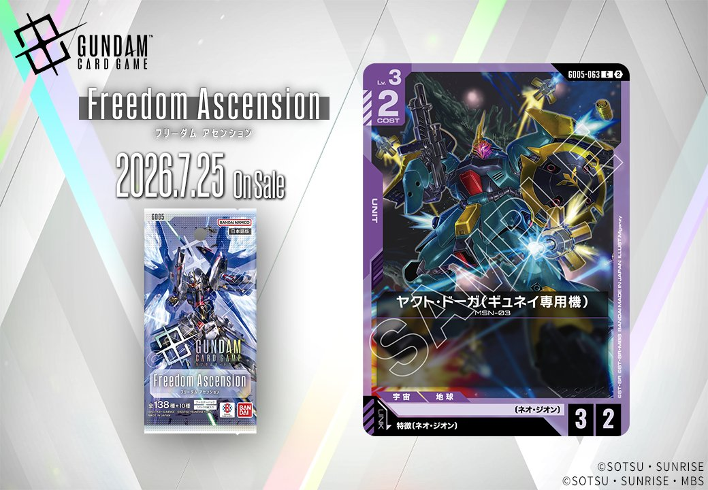
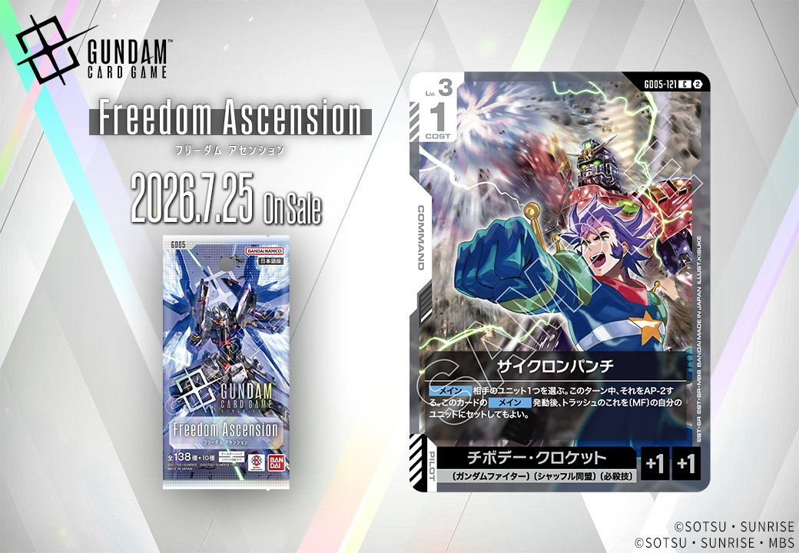
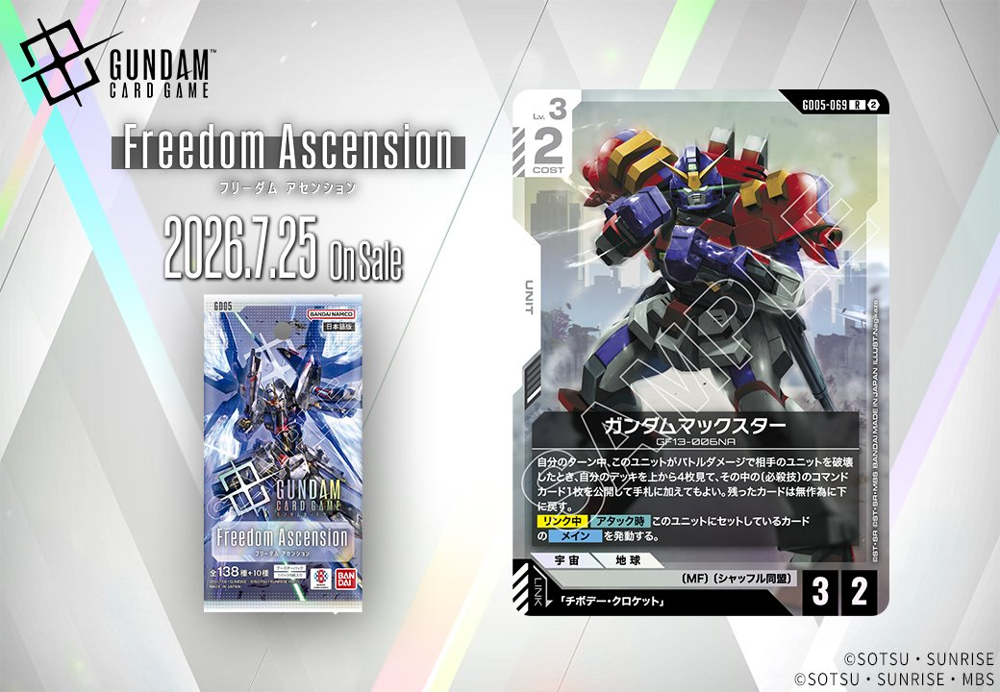

今回はGD05「Freedom Ascension」より、3枚のカードを紹介します。紫のUNIT「ヤクト・ドーガ(ギュネイ専用機)」(GD05-063)は特徴にネオ・ジオンを持つPILOTとのリンクを備え、白のUNIT「ガンダムマックスター」(GD05-069)は「チボデー・クロケット」とのリンクを持ちます。加えて白のCOMMAND「サイクロンパンチ」(GD05-121)も登場し、いずれも2026-07-25発売です。

ヤクト・ドーガ(ギュネイ専用機) (GD05-063)
| 色 | 紫 | タイプ | UNIT |
| Lv | 3 | コスト | 2 |
| AP | 3 | HP | 2 |
| 特徴 | 〔ネオ・ジオン〕 | ||
| リンク条件 | 特徴にネオ・ジオンを持つPILOT | ||
COST2でAP3/HP2のバニラユニットとして、紫のネオ・ジオン軸に無理なく組み込める基礎打点役です。効果は持たないものの、特徴にネオ・ジオンを持つパイロットとのリンク対象になり、シャア・アズナブル(GD05-093)やクェス・パラヤ(GD05-094)を搭載する受け皿として機能します。 またアクシズ(GD05-129)の【起動・メイン】で手札から配備できるLv.3以下のネオ・ジオンユニットに該当し、2026-07-25発売後はこうした展開手段の対象として運用しやすい一枚です。



サイクロンパンチ (GD05-121)
| 色 | 白 | タイプ | COMMAND |
| Lv | 3 | コスト | 1 |
| パイロット | チボデー・クロケット（補正 AP+1 / HP+1） 〔ガンダムファイター〕、〔シャッフル同盟〕、〔必殺技〕 | ||
効果: メイン 相手のユニット1つを選ぶ。このターン中、それをAP-2する。このカードの メイン 発動後、トラッシュのこれを〔MF〕の自分のユニットにセットしてもよい。
COST1のコマンドで「相手のユニット1つを選ぶ。このターン中、それをAP-2する」と、低コストでアタックやブロックの計算を狂わせられる点が手堅い。AP-2はバトル前に使えば相手の打点を抑え、自軍ユニットの返り討ちを狙う補助になる。 加えて、メイン発動後に「トラッシュのこれを〔MF〕の自分のユニットにセットしてもよい」と、使い切りで終わらず〔MF〕のユニットへ再利用できる点が、1枚で2役こなすコマンドとして評価できる。2026-07-25発売。

ガンダムマックスター (GD05-069)
| 色 | 白 | タイプ | UNIT |
| Lv | 3 | コスト | 2 |
| AP | 3 | HP | 2 |
| 特徴 | 〔MF〕、〔シャッフル同盟〕 | ||
| リンク条件 | 「チボデー・クロケット」 | ||
効果: 自分のターン中、このユニットがバトルダメージで相手のユニットを破壊したとき、自分のデッキを上から4枚見て、その中の(必殺技)のコマンドカード1枚を公開して手札に加えてもよい。残ったカードは無作為に下に戻す。【リンク中】【アタック時】このユニットにセットしているカードのメインを発動する。
ガンダムマックスター(GD05-069)はCOST2でAP3/HP2のLv.3ユニット。自分のターン中にバトルダメージで相手ユニットを破壊すると、デッキ上4枚から(必殺技)のコマンドカード1枚を手札に加えられ、戦闘勝利を手札補充につなげられる点が特徴です。 「チボデー・クロケット」とのリンク中は【アタック時】にセットしているカードのメインを発動でき、アタックのたびにセットカードのメイン効果を活用できる構成です。2026-07-25発売。


関連カード
-
 クェス・パラヤ(GD05-094)NEW紫系 — 同色・共通特徴: ネオ・ジオン（新カード）
クェス・パラヤ(GD05-094)NEW紫系 — 同色・共通特徴: ネオ・ジオン（新カード） -
 ヤクト・ドーガ(クェス専用機)(GD05-053)NEW紫系 — 同色・共通特徴: ネオ・ジオン（新カード）
ヤクト・ドーガ(クェス専用機)(GD05-053)NEW紫系 — 同色・共通特徴: ネオ・ジオン（新カード） -
 サザビー(GD05-049)NEW紫系 — 同色・共通特徴: ネオ・ジオン（新カード）
サザビー(GD05-049)NEW紫系 — 同色・共通特徴: ネオ・ジオン（新カード） -
 シャア・アズナブル(GD05-093)NEW紫系 — 同色・共通特徴: ネオ・ジオン（新カード）
シャア・アズナブル(GD05-093)NEW紫系 — 同色・共通特徴: ネオ・ジオン（新カード） -
 アクシズ(GD05-129)NEW紫系 — 同色・共通特徴: ネオ・ジオン（新カード）
アクシズ(GD05-129)NEW紫系 — 同色・共通特徴: ネオ・ジオン（新カード） -
 ギュネイ・ガス(GD05-095)NEW紫系 — リンク対象（ネオ・ジオン PILOT）（新カード）
ギュネイ・ガス(GD05-095)NEW紫系 — リンク対象（ネオ・ジオン PILOT）（新カード） -
 マリーダ・クルス(GD01-093)赤系デッキ内採用率7.8% (303デッキ)
マリーダ・クルス(GD01-093)赤系デッキ内採用率7.8% (303デッキ) -
 ハマーン・カーン(GD02-091)赤系デッキ内採用率1.2% (45デッキ)
ハマーン・カーン(GD02-091)赤系デッキ内採用率1.2% (45デッキ) -
 フル・フロンタル(ST03-010)赤系デッキ内採用率8.4% (324デッキ)
フル・フロンタル(ST03-010)赤系デッキ内採用率8.4% (324デッキ) -
激昂(ST03-012)赤系デッキ内採用率0% (0デッキ)